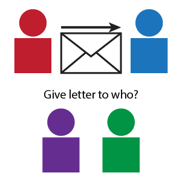

<!DOCTYPE html>
<html>
<head>
    <title>Research Study</title>

    <!--
        Written by Jay Son (minimum viable product) & Jae-Young Son (expansion)
    -->

    <!-- Utilities -->
    <script src="https://code.jquery.com/jquery-3.5.1.min.js"></script>
    <script src="utils/jquery.csv.js"></script>
    <!-- jsPsych -->
    <script src="jspsych-6.2.0/jspsych.js"></script>
    <script src="jspsych-6.2.0/plugins/jspsych-instructions.js"></script>
    <script src="jspsych-6.2.0/plugins/jspsych-html-keyboard-response.js"></script>
    <script src="jspsych-6.2.0/plugins/jspsych-image-keyboard-response.js"></script>
    <link href="jspsych-6.2.0/css/jspsych.css" rel="stylesheet" type="text/css">
    <!-- Helpers -->
    <script src="resources/adj.js"></script>
    <script src="resources/message_tests.js"></script>
    <script src="resources/imgs.js"></script>
    <script src="resources/setup.js"></script>
    <script src="resources/learn.js"></script>
    <script src="resources/memory.js"></script>
    <script src="resources/test.js"></script>

    <style>
        .flex-container {
            display: flex;
            justify-content: center;
            align-items: center;
        }

        .item {
            margin: 5px;
        }
    </style>

</head>
<body></body>

<script>

    /* Create timeline */
    var timeline = [];

    /* Template: fixation */
    var fixation = {
        type: 'html-keyboard-response',
        stimulus: '<div style = "font-size:60px;"> + </div>',
        choices: jsPsych.NO_KEYS,
        trial_duration: function() {
            return get_uniform(250, 750);
        },
        data: { feature: 'fixation' }
    }

    /* Template: ready-set-go */
    var get_ready = {
        type: 'html-keyboard-response',
        timeline: [
            {
                stimulus: 'To get ready, place your index fingers on the F and J keys. <p> Please press F.',
                choices: ['f']
            },
            {
                stimulus: 'To begin, please press J.',
                choices: ['j']
            }
        ]
    }

    /* Template: rest breaks */
    var take_break = {
        timeline: [
            {
                type: 'html-keyboard-response',
                stimulus: 'If you would like to take a quick break, please do so now. <p> Press the spacebar to continue.',
                choices: ['space']
            },
            get_ready
        ]
    }

    /* Learning task */
    var learn_instruct = {
        type: 'instructions',
        pages: [
            // slide 1
            "<p> In this part of the study, you will see two people from the same college on each trial. " +
                "<br> Your job is to learn whether those two people are friends with each other." +
                "<br> After making a guess, you'll see feedback indicating whether they're actually friends. </p>" +
            "<p> At first, you might feel like you're guessing randomly. That's okay. " +
                "<br> Just try your best to learn who's friends with each other. </p>" +
            "<p> You'll see each pair of people three times (in three separate 'runs' of the task). " +
                "<br> In each run, try to improve how accurately you can remember who's friends with each other. </p>",

            // slide 2
            "<p> Please note that you will earn an additional bonus, depending on how accurately " +
                "<br> you're able to learn who's friends with each other. </p>" +
            "<p> This is a pretty hard task, so don't feel too discouraged if you feel like " +
                "<br> you're not doing very well. Just try your best to learn who's friends. </p>",

            // slide 3
            "<p> You will use the F and J keys to respond." +
                "<br> F = Not Friends" +
                "<br> J = Yes Friends </p>"
        ],
        show_page_number: true,
        show_clickable_nav: true,
        allow_keys: false
    }

    // For narrative clarity, many helpers are tucked away in resources/learn.js
    var learn_procedure = {
        timeline: [
            fixation,
            learn_guess,
            learn_resp_f,
            learn_resp_j,
            learn_feedback
        ],
        timeline_variables: learn_prompts,
        randomize_order: true
    }

    // Full timeline of learning task events
    timeline.push(learn_instruct);
    timeline.push(get_ready);
    timeline.push(learn_procedure);
    timeline.push(take_break);
    timeline.push(learn_procedure);
    timeline.push(take_break);
    timeline.push(learn_procedure);

    /* Memory task */
    var memory_instruct = {
        type: 'instructions',
        pages: [
            // slide 1
            "<p> In this part of the study, you will see the same pairs of people again. " +
                "<br> Please try to do your best to remember which people are friends." +
                "<br> You will also be asked to rate how sure you are about your memory. </p>",

            // slide 2
            "<p> Please note that you will earn an additional bonus, depending on how accurately " +
                "<br> you remember who's friends. </p>",

            // slide 3
            "<p> When rating how sure you feel about your memory, please use the following keys." +
                "<br> S = Very Unsure" +
                "<br> D = Unsure" +
                "<br> K = Sure" +
                "<br> L = Very Sure </p>"
        ],
        show_page_number: true,
        show_clickable_nav: true,
        allow_keys: false
    }

    // For narrative clarity, many helpers are tucked away in resources/memory.js
    var memory_procedure = {
        timeline: [
            fixation,
            memory_resp,
            memory_conf
        ],
        timeline_variables: memory_prompts,
        randomize_order: true
    }
    
    // Full timeline of memory task events
    timeline.push(memory_instruct);
    timeline.push(get_ready);
    timeline.push(memory_procedure);

    /* Message-passing task */
    var test_instruct = {
        type: 'instructions',
        pages: [
            // slide 1
            "<p> In the last part of the study, you will play a mail delivery game. " +
                "<br> In the diagram below, you can see that Red wants to send a letter to Blue. " +
                "<br> However, Red can only pass the letter to Purple or Green. " +
                "<br> Red doesn't know who Blue's friends are, and is having a hard time deciding. " +
                "<br> Your job is to pass the letter to someone who can deliver it to Blue. " +
                "<p>  </p>",

            // slide 2
            "<p> On each trial, you will give the letter to Purple or Green. " +
                "<br> If one of them is friends with Blue, then they will deliver the letter directly." +
                "<br> Otherwise, they will need to pass the letter to someone else until it finally" +
                "<br> reaches a person who can deliver it directly to Blue. " +
                "<br> Depending on your choice, the letter could be delivered efficiently, inefficiently, or not at all. " +
                "<p>  </p>",

            // slide 3
            "<p> In the real task, you'll see photos of the people you've been seeing throughout the study. " +
                "<br> When you're choosing who to give the letter to, it might help if you try to " +
                "<br> remember who's friends with each other. " +
                "<br> That could help you figure out the most efficient way to deliver the mail. </p>",

            // slide 3
            "<p> When making your decision, please use the following keys." +
                "<br> F = Person on the left" +
                "<br> J = Person on the right </p>"
        ],
        show_page_number: true,
        show_clickable_nav: true,
        allow_keys: false
    }

    // For narrative clarity, many helpers are tucked away in resources/test.js
    var test_procedure = {
        timeline: [
            fixation,
            test_resp
        ],
        timeline_variables: test_prompts,
        randomize_order: true
    }

    // Full timeline of message-passing task events
    timeline.push(test_instruct);
    timeline.push(get_ready);
    timeline.push(test_procedure);

    /* Start the experiment */
    jsPsych.init({
        timeline: timeline,
        on_finish: function () {
            jsPsych.data.displayData();
        }
    });

</script>

</html>